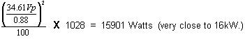

Table 5: RF POWER CALCULATION WITH LOSS CONSIDERED
 Assume Z = 50 Ω, Vpeak = 34.61, scope correction factor = 0.88, dummy load and cables atten. = 1028  Accounting for the loss resulted in an accurate answer. 15899 Watts is as close as we can hope to get to 16000 Watts without using the RF Power Measurement Kit. Note that if none of the loss had been accounted for the error could have been 3587 Watts or 22.6%. As a result, the observer would attempt to adjust the RF power far above the 16000 Watt limit! |